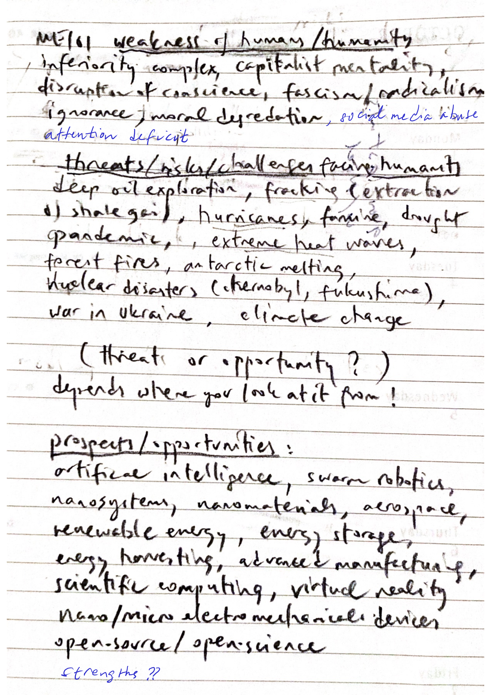
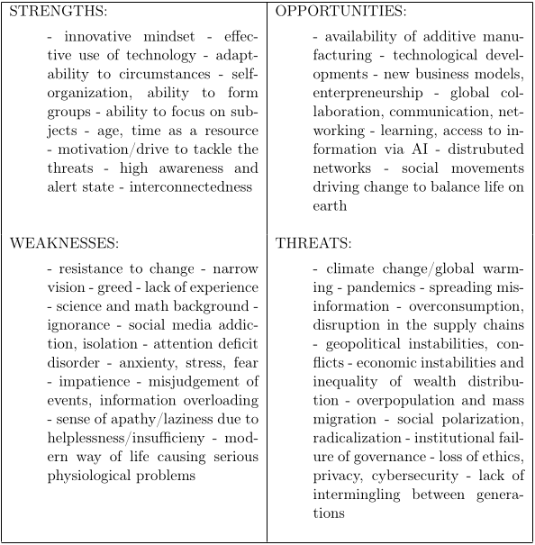
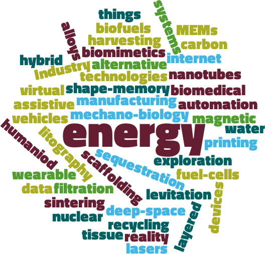

About the future, global issues, challenges on the one hand and opportunities, prospects on the other.

Use AI to describe the SWOT analysis. When, why, how is it useful? (Do not forget to provide the educational context while asking the question.)
We will form small groups of three students; you will be working closely with your teammates throughout the activity.
Focus: Future Prospects and Challenges

What is ethics? Watch the videos below to prepare for next week’s short quiz activity.
What is happening in mechanical engineering?

Find your previous group members; you will be working closely with your teammates throughout the activity.
Enter the text (maximum 600 words) in the appropriate space provided in the assignment: Classwork 2: Keyword Analysis for Next Session Ask AI: